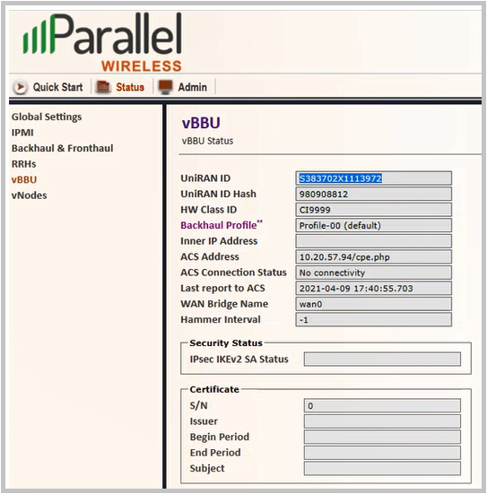

Configure a vBBU
Use this task to configure a discovered vBBU, its location, and select its profiles.
You must pre-provision the vBBU using the WCT tool. Refer to
the Virtual Baseband Unit Server Commissioning Guide for more information. For example, the following information is configured for the
vBBU in the vBBU WCT:

- In the navigation bar, click Devices > Create Devices.
-
In the Create New Device window, complete the following fields in the
Device Id: 41733 section:
NOTE: The prefix number: 41733 is part of the vBBU device identifier (ID) that is used for every vBBU or vNode that gets created in the system.
Field
Description
Device Id field This is a static field shows the Parallel Wireless Organization Unique Identifier (OUI), which is 41733. Device Product Class field Enter the vBBU device ID. This is the HW Class ID that was configured in the WCT vBBU interface. For example: C19999 Device Serial Number field Enter the required vBBU hardware serial number that is assigned to the vBBU (that can be found on the device itself). This ID is also the UniRAN ID for the vBBU interface. For example: S3837C2X1113972 Device Name field The device name displays automatically as a combination the previous device ID, product class and serial number entries.
For example: 41733-C19999- S3837C2X1113972
Select Device Type drop-down list Select vBBU as the device type. Name of Region Enter the region in which this vBBU or vNode exists. For example, New Hampshire. Site Enter a specific site location. For example, Darnstable, Powdunk Hills.
-
Click the SYSTEM INFORMATION tab and complete the following
fields:
Field
Description
Device Version field The software version of the vBBU device displays by default. PKI Enabled checkbox Check the checkbox to enable PKI securty on the device. GSMConfig Select the name of the Global System for Mobile communications (GSM) profile that you created for a Converged Wireless System (CWS) access node which performs as a multi-carrier node that operates as a standalone base station or Remote-Radio Head (RRH) connected to a virtualized Baseband Unit (vBBU). Refer to the Configure a GSM Profile for Access Nodes section for more information. HeartBeat Select the cell heartbeat monitoring profile that you created. Refer to the Configure a Cell Heartbeat Monitoring Profile section for more information. Logging Select the name of the system logging profile that you created. Refer to the Create a System Logging Profile section for more information.
PkiSecurity Select the system security profile which includes the PKI certificate parameters required for server authentication that you created. Refer to Create a System Security Profile for more information. QoSUplink Select the uplink QoS profile that contains Differentiated Services Code Point (DSCP) maps that are applied to data traffic towards the HNG from access network devices profile that you created. Refer to the Configure Uplink QoS section for more information. StatsInterval Select the cell statistics monitoring profile that you created. Refer to the Configure a Cell Statistics Profile section for more information. TrShapingUplink Select the network traffic shaping profile necessary for categorizing access network traffic that you created. Refer to the Create a Traffic Shaping Profile section for more information. - Click CREATE+.
-
A configururation page for the vBBU that is similar to the one shown below
appears: